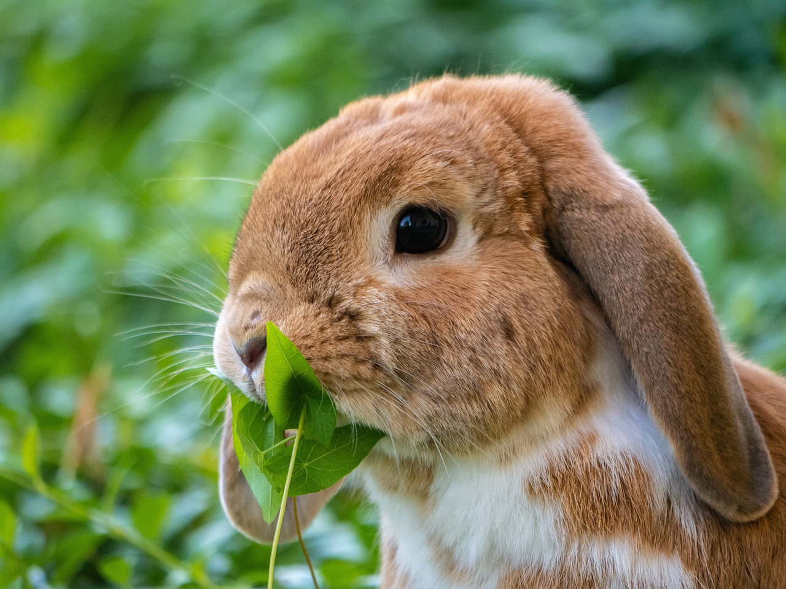

Everything you need to know about rabbits

Rabbits are small mammals known for their long ears, strong hind legs, and gentle nature.
They are social and active animals that thrive in groups, often building complex burrow systems called warrens.
As herbivores, rabbits primarily eat grass, hay, and leafy greens, which helps keep their teeth healthy as they grow continuously.
Rabbits communicate through body language, thumping their hind legs when alarmed and purring softly when content.
With proper care, including a balanced diet, regular grooming, and a safe, spacious environment, rabbits make affectionate and playful
pets that can live up to 10 years or more.
More pictures of rabbits